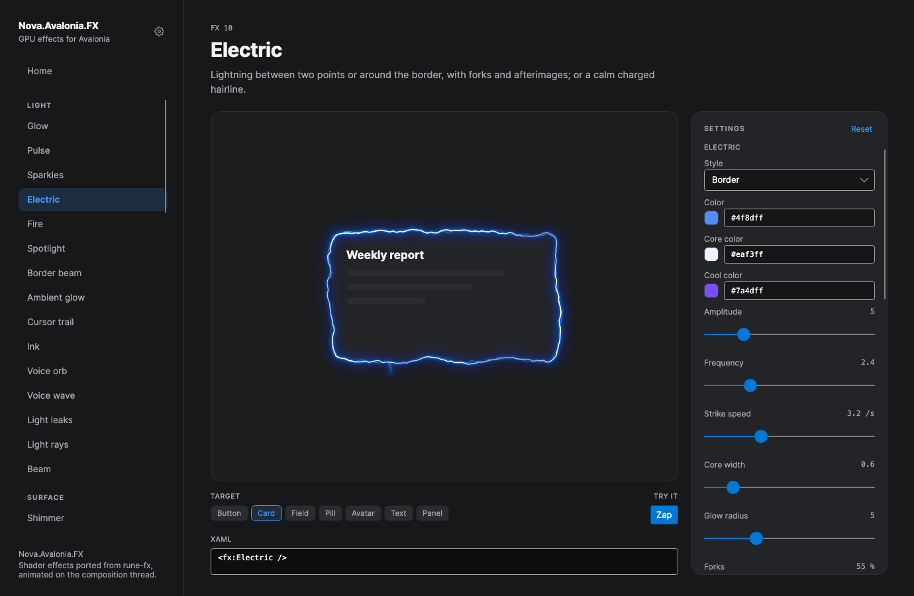
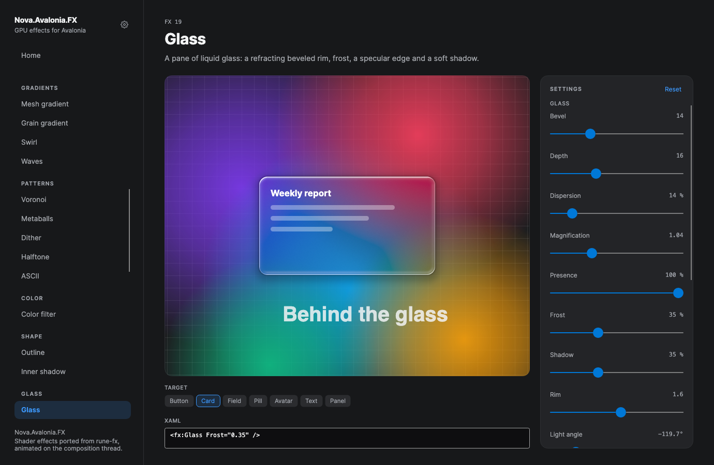
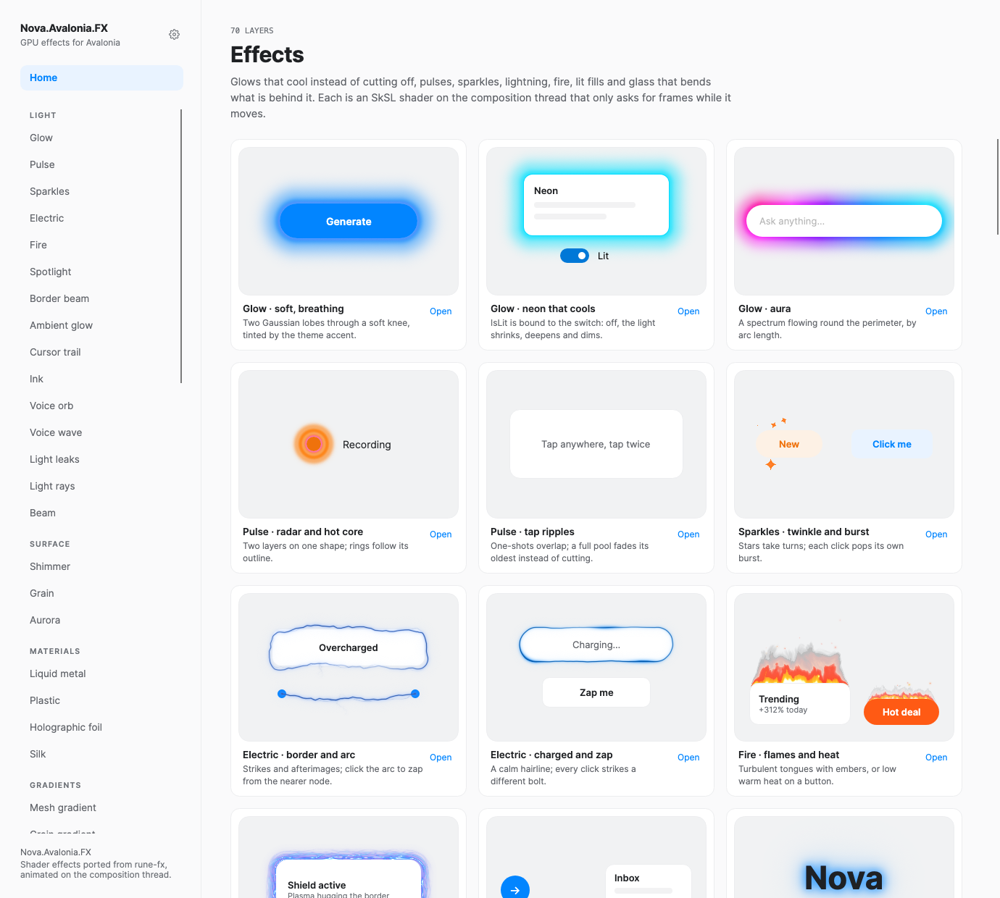

Gallery
The Nova.Avalonia.FX gallery lets you try every effect layer, change its settings and copy its XAML. It runs in your browser as well as on the desktop.

What is in it
- Home shows curated demos on real controls.
- Effect pages show one layer on a target you pick (a button, card, field, pill, avatar or text), with its one-shots, its XAML and its settings. The settings panel only shows the settings that do something for the current style. Glass and distortion pages put a drifting scene behind the target so there is something to bend.
- The settings flyout switches the theme (light, dark or the system's), motion (full or reduced) and dither.

Under 880 pixels wide, as on a phone or a tablet, the sidebar slides in over the page from the menu button at the top left, and picking a page closes it. When the page itself is narrow, its settings fold into a drawer that the settings button at the right of the page header opens. A press outside it or Escape closes it.
The gallery uses the Nova.Avalonia.UI gallery theme: Fluent, the Nova palette and the shared Nova shell.

Run on the desktop
dotnet run --project samples/Nova.Avalonia.FX.Gallery.Desktop
The gallery itself is samples/Nova.Avalonia.FX.Gallery (the app, pages and styles). The desktop app around it, samples/Nova.Avalonia.FX.Gallery.Desktop, adds the tools below.
Run in the browser
samples/Nova.Avalonia.FX.Gallery.Browser runs the same gallery in the browser (WebAssembly, drawn with WebGL). Install the WebAssembly tools once, then run the browser host:
dotnet workload install wasm-tools
dotnet run -c Release --project samples/Nova.Avalonia.FX.Gallery.Browser
Then open http://localhost:5240. The page takes these options in its address:
| Option | What it does |
|---|---|
?effect=glow |
Opens an effect page; ?effect=fire:Simulated opens it in a style. |
?check |
Compiles every shader at start and reports any that fail in the browser's console. |
?tour |
Opens every effect page in turn and fires its one-shot; ?tour=5&only=glass,fire shows some, 5 seconds each. |
?verify |
Opens every effect in every style, fires its one-shot, checks that it drew, and prints the ones that didn't. |
?bench |
Times every effect, as the desktop's --bench does; ?bench=glow,fire:Simulated times some, &seconds=3 each. |
?check, ?verify and ?bench also show their results on the page (click to hide), for browsers without a console at hand.
global.json asks for the .NET 10.0.100 SDK or a later 10.0 feature band.
Publish the browser gallery
A Release publish compiles the .NET code ahead of time, which keeps every effect smooth on slower machines at the cost of a larger download (see Performance):
dotnet publish -c Release samples/Nova.Avalonia.FX.Gallery.Browser -o publish/browser
Then serve publish/browser/wwwroot with any static web server. The page loads everything by relative path, so it works under any path. The documentation workflow publishes it the same way and deploys it under /gallery/, next to this documentation, whenever a push to main passes the build and tests.
Tools
The desktop app has command-line tools for snapshots, checks and timing. Pass them after --.
Snapshots: --snap
dotnet run --project samples/Nova.Avalonia.FX.Gallery.Desktop -- --snap gallery.png --theme dark --time 2.3
Renders the gallery headless, through Skia, at a fixed time, and exits. Add:
--effect electricto open an effect page, and--target 1to pick its target: 0 button, 1 card, 2 field, 3 pill, 4 avatar, 5 text, 6 panel.--reducedfor the reduced-motion poses.--size 1380x900to set the size.--set Style=Heatto set any parameter of the effect page's layer.--frames 96 --fps 24to write a numbered frame sequence.--fireto fire the page's one-shot (a splash, a reveal) on the first frame, and--fire-every 4to fire it again every 4 frames.--settingsto open the settings drawer in a narrow window.
The animated images in the README are frame sequences made this way.
Every effect on every target: --sweep
dotnet run -c Release --project samples/Nova.Avalonia.FX.Gallery.Desktop -- --sweep sweep
Renders every effect on every target in both themes, in one run (about five minutes), with one-shots caught mid-flight: sweep/<effect>/<theme>-<target>.png, plus a labeled sheet per effect, sweep/<effect>.png, for checking that every demo reads well. --only glow,beam limits it to some effects.
Timing: --bench
dotnet run -c Release --project samples/Nova.Avalonia.FX.Gallery.Desktop -- --bench bench.csv
Times every layer in a real window on the GPU the app uses, and writes the results to a CSV file. Performance covers its options and how to compare a run with the baseline.
The settings panel: --audit-panel
dotnet run --project samples/Nova.Avalonia.FX.Gallery.Desktop -- --audit-panel panel-audit.md
Drives every editor of every effect page headless (a slider moved, a toggle flipped, a choice picked, a color typed), checks that its property changed, and writes a report. It also checks the settings drawer in a narrow window. The build workflow runs it on Windows, Linux and macOS.
Checks and tours: --verify and --tour
dotnet run --project samples/Nova.Avalonia.FX.Gallery.Desktop -- --verify
dotnet run --project samples/Nova.Avalonia.FX.Gallery.Desktop -- --tour 3
--verify opens the gallery and checks that every effect and style draws, as ?verify does in the browser. --tour 3 walks through every page, 3 seconds each.
Documentation images: --docs
dotnet run -c Release --project samples/Nova.Avalonia.FX.Gallery.Desktop -- --docs docs
Writes the parts of this documentation that come from the code: each effect's tables of properties, styles and methods under docs/includes/, and its light and dark images under docs/images/effects/, on the target the gallery opens it on. --only glow,border_beam limits it to some effects, and --no-images writes only the tables (in under a second). A full run takes about six minutes, and running it twice gives the same files.